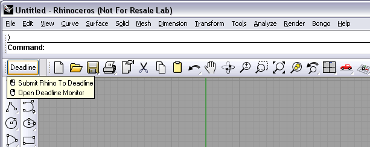
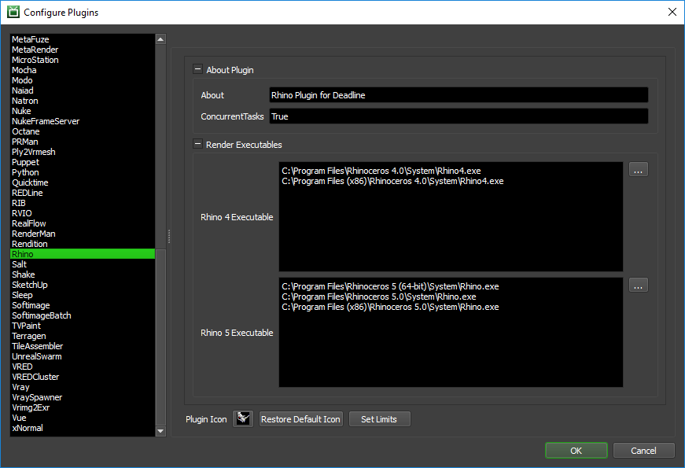

Rhino¶
Warning
McNeel does not currently support running Rhino as a service. Please see FAQ for further details.
Job Submission¶
You can submit jobs from within Rhino by installing the integrated submission script, or you can submit them from the Monitor. The instructions for installing the integrated submission script can be found further down this page.

To submit from within Rhino, left-click on the ‘Deadline’ button you created during the integrated submission script installation.
Submission Options¶
The general Deadline options are explained in the Job Submission documentation, and the Draft/Integration options are explained in the Draft and Integration documentation.
The Rhino specific options are:
Rhino File: The Rhino file to be rendered.
Output File: The filename of the image(s) to be rendered.
Renderer: Specify the renderer to use.
Submit Rhino Scene File: If this option is enabled, the scene file will be submitted with the job, and then copied locally to the Worker machine during rendering.
Version: The Rhino Version to use.
View: Which view within the scene should be rendered. If left blank, the current view will be used.
Bongo Animation Rendering¶
Render Bongo Animation: If your Rhino file uses the Bongo animation plugin, you can enable a Bongo animation job.
Frame List: The list of frames to render (if rendering a Bongo animation).
Frames Per Task: This is the number of frames that will be rendered at a time for each job task (if rendering a Bongo animation).
Bongo Version: The Bongo Version to use.
Tile Rendering¶
The following options are available for tile rendering. Note that tile rendering is only available when submitting from within Rhino and is NOT available in Rhino 6 or with “V-Ray for Rhino” due to limitations in the V-Ray frame buffer.
Enable Tile Rendering: If enabled, the image will be rendered in regions and automatically assembled by Draft.
Use Jigsaw: Use Jigsaw to determine the regions.
Tiles in X: The number of tiles to divide the regions horizontally into if not using Jigsaw.
Tiles in Y: The number of tiles to divide the regions vertically into if not using Jigsaw.
Submit Dependent Assembly Job: If this option is enabled then an assembly job will be sent.
Assemble Over: Determines what the tiles/regions will be assembled over; nothing, a single image or the same image as the final image.
Error on Missing Background: If this option is enabled, the render will fail if the background image specified does not exist.
Image File: The background image file to be used for assembly.
Cleanup Tiles After Assembly: If this option is enabled, the tiles will be deleted after the assembly job is completed.
Error on Missing Tiles: If this option is enabled, the assembly job will fail if it cannot find any of the tiles.
Supported Renderers¶
Deadline supports many of the Rhino renderers out of the box, including Rhino Render, Flamingo, V-Ray, Brazil, Penguin, and TreeFrog. If you are using a renderer that Deadline does not currently support, please contact Deadline Support and let us know!
It is also possible to manually add new renderers to the list that Deadline supports. Go to \\your\repository\script\Submission\RhinoSubmission and open Renderers.ini in a text editor. You’ll see that this file contains the list of renderers that Deadline currently supports, one per line. Just add the missing renderer as a new line and save the file. Note that the name needs to match that of the renderer exactly!
Plugin Configuration¶
You can configure the Rhino plugin settings from the Monitor. While in power user mode, select Tools -> Configure Plugins and select the Rhino plugin from the list on the left.
Render Executables
Rhino Executable: The path to the Rhino executable file used for rendering. Enter alternative paths on separate lines. Different executable paths can be configured for each version installed on your render nodes.
Integrated Submission Script Setup¶
The following procedures describe how to install the integrated Rhino submission script for different versions of Rhino. This script allows for submitting Rhino render Jobs to Deadline directly from within the Rhino editing GUI.
You can either run the Submitter installer or manually install the submission script.
Submitter Installer¶
Run the Submitter Installer located at
<Repository>/submission/Rhino/Installers.
Manual Installation¶
Rhino 5 and later:
The following installation procedure is intended and has been tested for Rhino 5 and later.
In Rhino, select ‘Tools’ -> ‘Toolbar Layout’.
Select the Toolbar Collection file that you want to add the Deadline submission button to, and then select ‘File’ -> ‘Import Toolbars…’. Browse to
[Repository]\submission\Rhino\Client\and select the ‘deadline.rui’ file.Check the box next to ‘Deadline’ and press ‘OK’.
- There should now be a toolbar with a Deadline button on your screen, which you can dock anywhere you want.
Left-click on the button to submit a Rhino Job to Deadline.
Right-click on the button to launch the Monitor.
Rhino 4:
The following installation procedure is intended and has been tested for Rhino 4.0. It is largely similar to the procedure described for Rhino 5 above, with some slight differences.
In Rhino, select Tools -> Toolbar Layout.
Select the Toolbar collection file that you want to add the Deadline submission button to, then select Toolbar -> Import. Browse to
[Repository]\submission\Rhino\Client\and select the deadline.tb file.Check the box next to Deadline and press Import.
Select File -> Save to save the changes to the selected Toolbar collection file.
- There should now be a toolbar with a Deadline button on your screen, which you can dock.
Left-click on the button to submit a Rhino job to Deadline.
Right-click on the button to launch the Monitor.
FAQ¶
Which versions of Rhino are supported?
Rhino 4 and later are supported.
Can Rhino run as a service?
No. Unfortunately, McNeel does not currently support running Rhino as a service. As a consequence you should not run Deadline Worker as a service either if you wish to execute Rhino jobs on Deadline.
Does Rhino need to be licensed on each render node?
Yes.
Is the Bongo plugin for animation supported?
Yes. The Rhino submission dialog has the option to render a Bongo animation.
Is V-Ray for Rhino fully supported?
Yes, except for Tile Rendering. Please see the V-Ray Distributed Rendering plugin for details on how V-Ray interactive DBR in Rhino operates.
Error Messages and Meanings¶
This is a collection of known Rhino error messages and their meanings, as well as possible solutions. We want to keep this list as up to date as possible, so if you run into an error message that isn’t listed here, please visit the Thinkbox Help Centre and let us know.
Currently, no error messages have been reported for this plugin.

{kind=link}
{kind=link}
{kind=link}
{kind=link}
{kind=link}
{kind=link}
{kind=link}